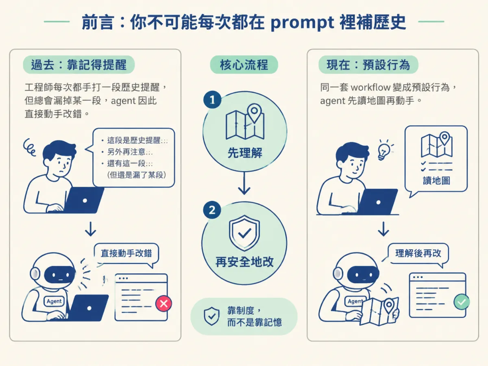
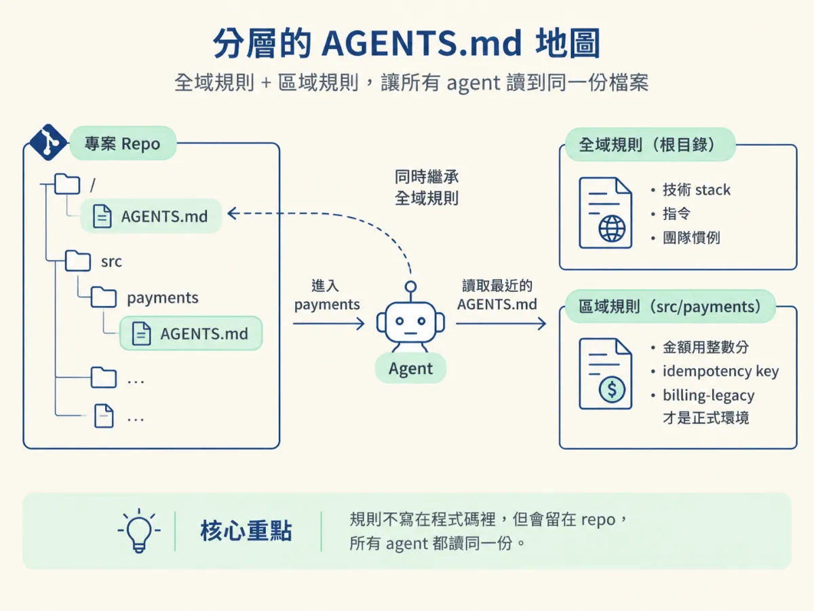
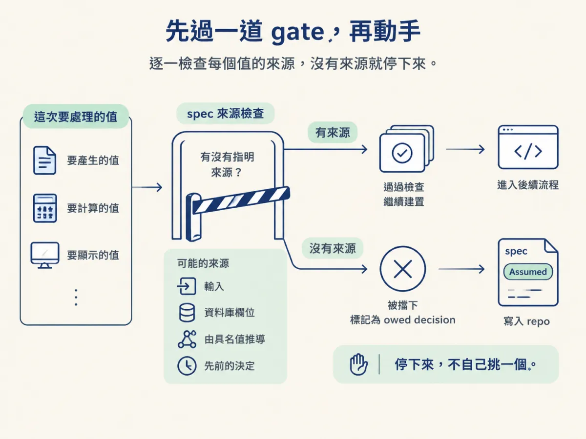
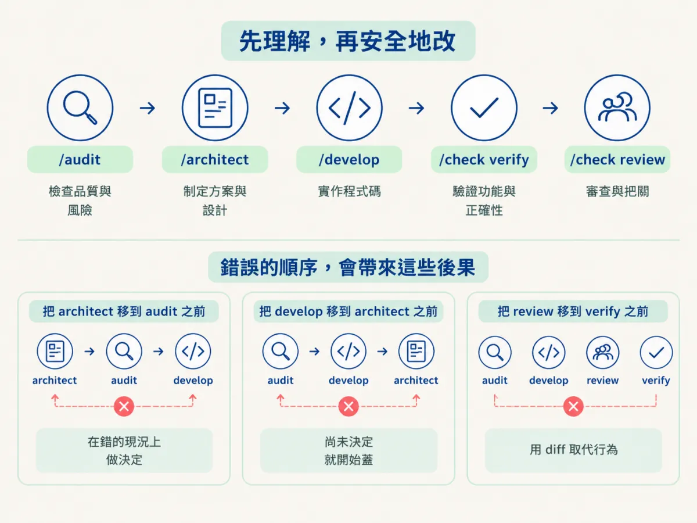

把 /audit、/architect、/develop、/check verify、/check review 各自對到「先理解、再安全地改」的哪一步，並說出每個 skill 在舊碼庫裡改變了什麼行為。
上一節的結論是：agent 猜錯，是因為它沒有 why。你當然可以在每一次對話的開頭，手打一段「注意，billing-legacy 才是正式環境在跑的版本，place-order.ts 裡那段判斷不能刪」。這樣做有效，但你會發現兩件事：第一，你每次都要重打；第二，你總會漏掉某一段，因為你自己也記不全。
真正需要的是把「先找地圖、再動手」變成一種預設行為，而不是靠你每次記得提醒。這套 workflow 就是在做這件事。它在舊碼庫上的工作順序，可以收成兩步：先理解，再安全地改。這一節把五個你會用到的 skill 對到這兩步上，讓你知道每個 skill 到底改變了 agent 的哪一個行為。

課程對舊碼庫的指示很明確：先 /audit，再讓後面的 skill 接手。原文是這樣說的：
On an existing codebase, runauditfirst. It reads your real code and writes the context files, so every later skill understands your stack and conventions before it touches anything. Thenscopeenrolls what already exists and plans the new slice on top. From there the loop is the same.
後面還有一句更短的版本，把整個順序講完：
Understand first. Then touch.
這個順序不能顛倒，理由不難懂。/architect 的工作是比較選項、做決定，而選項是從現況推出來的。如果它還沒讀過現況，它給你的就會是一份「一般來說這樣最好」的建議，而不是「在你們這個系統裡這樣最好」的建議。前者聽起來很專業，實際上跟你上網查到的東西差不多。
先看全貌，再一個一個拆。下面這張表要看的不是 skill 叫什麼名字，而是它擋掉了哪一種失手。
| 要處理的問題 | 用哪個 skill | 它改變了什麼行為 |
|---|---|---|
| 這個專案怎麼運作，沒人寫下來 | /audit | 掃描真的程式庫，寫出 AGENTS.md 地圖（根目錄加巢狀） |
| 要改別人設計的東西 | /architect（ENHANCEMENT 模式） | 先讀現有程式碼與 spec，才提出選項 |
| 準備開始寫 | /develop | 先過 spec gate，再讀既有模式，最後才寫 |
| 改完了，不確定有沒有弄壞 | /check verify | 在真的跑起來的 App 裡證明行為沒變 |
| 要進 PR 了 | /check review | 換一個沒寫過這段程式的模型看 diff |
/audit：把 why 寫成一個檔案/audit 在 brownfield 專案裡做的事，skill 檔案寫得很清楚：
Brownfield, undocumented (code, noAGENTS.md): scan the whole project, write rootAGENTS.mdand nested<area>/AGENTS.mdfiles, judging what is global (root) vs area specific (nested).
注意它產出的東西：不是一份報告，而是檔案。這一點是整套 workflow 的基礎。檔案會留在 repo 裡，session 清掉還在，同事 pull 下來也看得到，下一個 agent 進來讀到的還是同一份。這就是把「某個人腦中的 why」轉成「所有 agent 都讀得到的 why」。
地圖長什麼樣子？下面是示範，不是課程 repo 裡的檔案，但結構與 /audit 的產物一致：
# AGENTS.md（專案根目錄）
## Stack
Next.js 15, TypeScript, Prisma, Postgres
## Commands
pnpm dev / pnpm test / pnpm db:migrate
## Conventions
- 錯誤一律回傳 Result，不拋例外
- 新頁面放在 app/(dashboard)/ 底下
# src/payments/AGENTS.md（巢狀）
## Rules
- 金額一律用整數分計算，不碰浮點數
- 呼叫金流商前必須先寫 idempotency key
- billing-legacy 才是正式環境在跑的版本最後那一行就是上一節說的那種知識：它不寫在程式碼裡，但少了它，agent 會選錯服務。根目錄那份放全域規則，巢狀那份放只有這個區域才適用的規則。agent 在改 payments 時讀最近的那一份，於是同時看到全域與區域的規則。

/architect：先讀現況，才給選項/architect 有四種模式，舊碼庫對應的是 ENHANCEMENT。它對這個模式的描述只有一行，但那一行就是重點：
Read existing code + specs, focused option comparison
在全新專案裡，它做的是大範圍的技術棧比較；在舊碼庫裡，它先讀你現有的實作與 spec，然後才在「這個系統已經長這樣」的前提下比較選項。差別很大。同一個問題，在空白專案裡答案可能是「用 X」，在你們的系統裡答案可能是「沿用你已經在用的 Y，因為換掉的遷移成本大於好處」。
再看它問問題的方式。它會把資訊分成三類：能從程式碼或需求推斷的，它自己處理，不問你；只有你知道的（商業規則、偏好、合規範圍），它才問；專業能決定的（用哪個資料庫、哪個登入套件），它給一個建議加一個備案，讓你覆寫。在舊碼庫裡，第一類的比例特別高，因為大部分答案都寫在程式碼裡，只是沒有人整理過。
/develop：先過一道 gate，再動手/develop 在寫任何東西之前，會先問自己一個問題。這個問題不是「我覺得這樣可以嗎」，而是一個機械式的檢查：
Enumerate every value this build must produce, compute, or display (from the acceptance criteria and the spec's design). For each, does the spec name where it comes from (an input, a DB column, a derivation from a named value, a prior decision)? Any required value with no named source is an owed decision.
翻成白話：把這次要產生、計算、顯示的每一個值列出來，然後逐一檢查 spec 有沒有說它的來源。任何一個值沒有來源，就是一個還沒做的決定，它會停下來，不會自己挑一個。

為什麼這個檢查在舊碼庫特別有用？因為「來源」常常藏在既有系統裡。某個金額是從哪張表算出來的、某個狀態是從哪個欄位推的、某個排序為什麼是那樣，這些在全新專案裡由 spec 定義，在舊系統裡則是由歷史定義。這個檢查逼 agent 去把歷史找出來，而不是用一個看起來合理的演算法填補。
如果它判斷有一個真正的決定還沒做，而你又選擇先往下建，它不會默默猜。它會先寫一份 Assumed 狀態的 spec，把假設寫進 repo：
# NNNN · <feature>
**Status**: Assumed
**Date**: <today>
**Authorized by**: <engineer>, during /develop
## Owed decision
<the specific load bearing choice that was not made>
## Assumption built on
<the concrete assumption this build will use>
## Code area
<the paths this build will touch>這份檔案存在的理由很單純：假設如果只留在對話裡，session 一清就沒了，同事看不到，下一個 agent 也不知道。寫成檔案之後，它就變成一個「還沒被正式討論、但至少被記錄下來」的決定。決定留在 repo，不在 chat，這是整套 workflow 反覆強調的一句話。
/check verify：在真的 App 裡證明改完之後，第一個檢查是 verify。它做的事不是跑測試，而是把真的 App 跑起來，看行為對不對：
verify (runtime proof): run the real app and watch the change behave. Proves it works and conforms to the spec (every acceptance criterion met, every specced surface built), which green tests never reveal.
最後那一句才是重點。測試綠不代表行為對，尤其是在舊碼庫：測試可能只覆蓋主要路徑，而被你弄壞的偏偏是那條很少人走的舊路徑。verify 打開真的 App、真的按下去，才有機會看到「畫面一直轉圈」這種測試抓不到的事。
/check review：換一個沒寫過這段程式的模型第二個檢查是 review，它的設計有一個很實際的前提：
a senior read of the diff on a different model than wrote the code (a model reviewing its own output shares its blind spots)
同一個模型看自己的輸出，會同意自己。它的盲點跟它寫的時候一模一樣，所以它會覺得那段刪掉的程式碼確實該刪。換一個模型，至少有機會用不同的角度問：「這段為什麼存在？」
要注意的是，review 只讀不改。它把發現寫進 docs/reviews/，由你決定要不要修。這是刻意的：如果 review 會自動改 code，你就失去了最後一個人類判斷點。
把這五個 skill 排成「先理解、再安全地改」，順序是：/audit → /architect → /develop → /check verify → /check review。把任何一個步驟往前挪，都會失去它原本的作用。
先 architect 再 audit，等於在錯的現況上做決定。它會讀到一個不完整的專案，給出一個聽起來很合理的方案，然後你照著做，才發現正式環境根本不是這樣跑。
先 review 再 verify，等於用 diff 取代行為。review 看的是程式碼的形狀，它看不出「舊版 App 送空 cart 時會轉圈」這種只有跑起來才會出現的問題。
先 develop 再 architect，就是 spec gate 在擋的事。它當然做得下去，只是你會在還沒決定的情況下開始蓋，蓋到一半發現某個值沒有來源，那時候改動成本已經高很多。

看到這裡可能會有一種壓力：是不是每次改一行都要把整套跑完？不是。workflow 的設計是「你需要哪幾個就跑哪幾個」：
There are nine. You run only the ones a change needs, in whatever order fits.
課程的常見問答裡也講得非常直接：一個很小的改動可以只跑 develop 加 check verify；一個 bug 就只跑 debug。真正需要完整跑一輪的時機，是你第一次進入一個沒有地圖的舊碼庫。那次 /audit 建好的地圖會留下來，之後靠 /sync 維護，不需要每次重做。
所以你可以這樣記：第一次進場要建地圖，之後每次改動只要沿著地圖走。
第一個混淆，是把 /audit 當成一次性的文件工作。它產出的 AGENTS.md 是活的：專案加了新的慣例、換了指令、某個服務退役，地圖就要更新，那是 /sync 的工作。一張過期的地圖比沒有地圖更糟，因為它會讓你以為自己掌握了現況。
第二個混淆，是把 workflow 當成一條必須從頭走到尾的流程圖。它比較像一組工具，每個工具對應一種失手。你可以只拿 /check verify 來驗一個手工改的 bug fix，也可以只拿 /architect 來想清楚一個決定。
第三個混淆，是以為 review 可以取代 verify，或反過來。它們看的是不同的東西：verify 看行為，review 看程式碼。兩個都看過，你對這次改動的掌握才比較完整。
舊碼庫的工作順序只有兩步：先理解，再安全地改。/audit把 why 寫成AGENTS.md地圖，讓 agent 有東西可讀；/architect在 ENHANCEMENT 模式下先讀現況才給選項；/develop用「每個值都要有來源」的 gate 擋住猜測，必要時把假設寫成Assumedspec；/check verify在真的 App 裡證明行為沒壞；/check review換一個模型補上作者的盲點。順序不能顛倒，但也不必每次全跑：第一次進場建地圖，之後沿著地圖走，只挑這次改動需要的 skill。